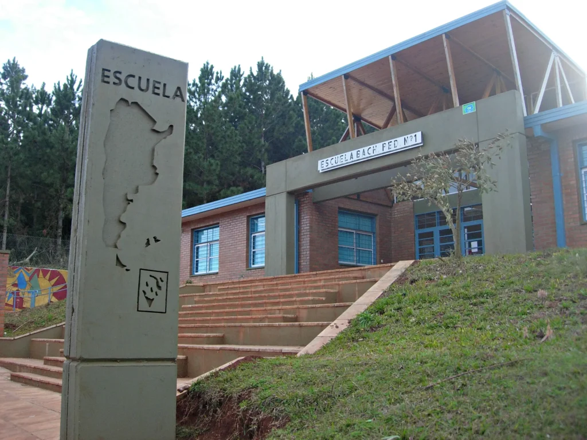
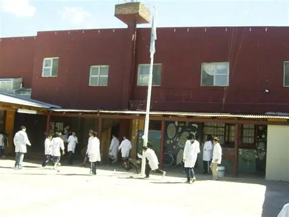
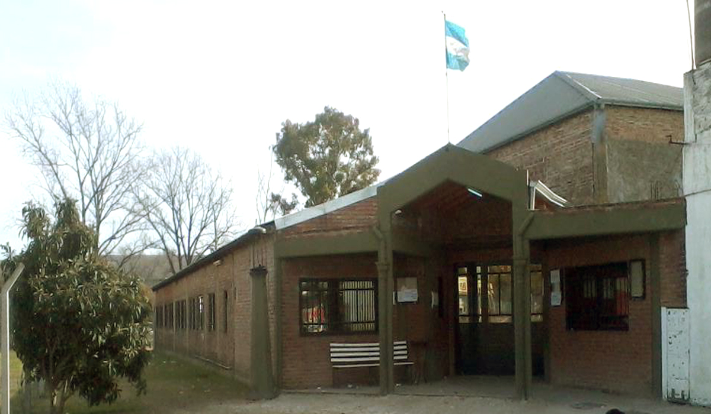

Estas son algunas de las EcoEscuelas que hemos construido a lo largo de la Argentina
Escuela Un futuro mejor

Fachada de la EsEscuela Un futuro mejor
En esta escuela se dicta el taller de Sustentabilidad Digital. A los alumnos se les enseña sobre la obsolescencia programada, el impacto ambiental de los componentes electrónicos y cómo darles una segunda vida útil. Aprenden a diagnosticar, desarmar y reparar computadoras en desuso de la comunidad, además de estudiar técnicas de reciclaje seguro para plásticos y metales pesados.
Colegio San Martín

Alumnos disfrutando del recreo.
Los contenidos curriculares están cruzados por la Educación Ambiental de Campo. Los estudiantes aprenden biología, química y geografía directamente en la huerta de la escuela. Se les enseña sobre los ciclos de los nutrientes del suelo, la importancia de la biodiversidad de insectos, el proceso de compostaje a gran escala y técnicas de cultivo orgánico sin pesticidas ni agroquímicos.
Instituto Delta

Taller de robotica con materiales reutilizados.
Enfoque en ciencias exactas y proyectos de robótica aplicada a la automatización del riego eficiente del agua.